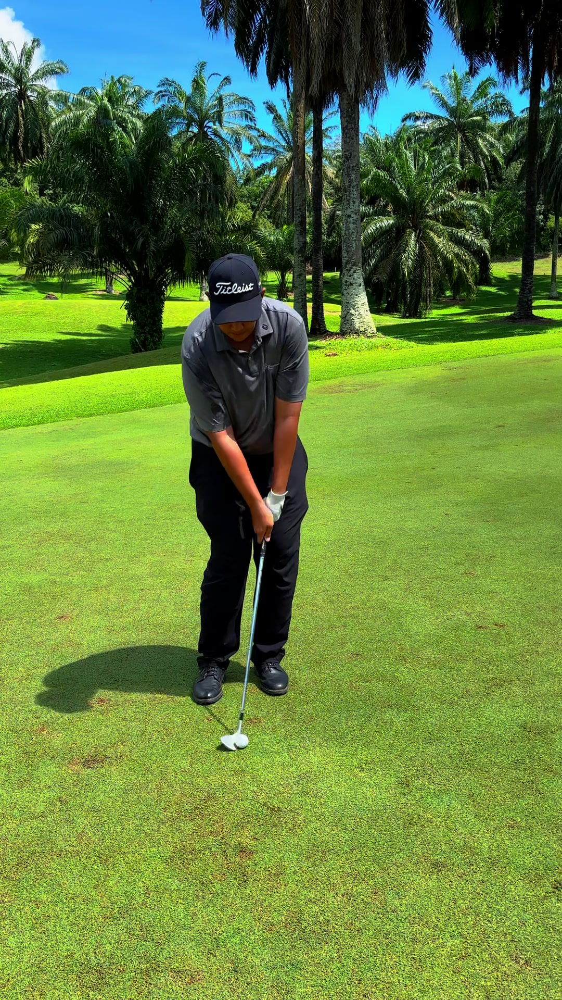
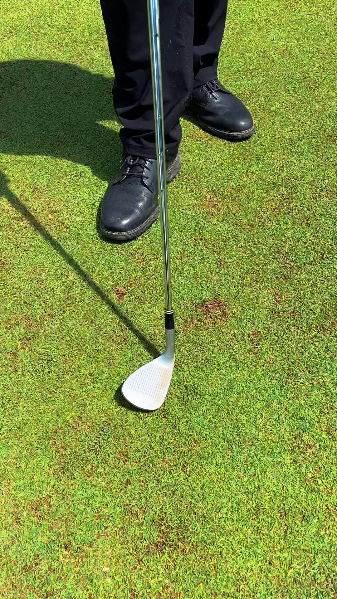

UJI · ATAS GREEN
ADA
DIVOT
KE TAK?
CHIP PAKAI WEDGE
0.3×
01
CHIP ATAS GREEN
02
CHECK RUMPUT
IMPACT
Boleh ke chip atas green?
BOLEH
TAK BOLEH
DIVOT?
SPOT IMPACT
TAK ADA
DIVOT.

01 · IMPACT

02 · LEPAS CHIP
0 divot · rumput clean
CHIP ATAS GREEN?
MESTILAH
BOLEH.
Strike clean,
rumput tak rosak.
BERANI TRY? KOMEN ↓